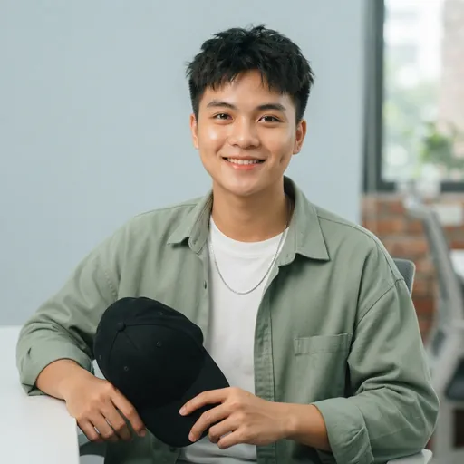

Bộ ngữ liệu làm video trên Google Flow
20 cảnh · 104 đoạn video 8 giây. Mỗi đoạn: ảnh khung đầu + câu lệnh có sẵn lời thoại. Phụ đề do web tự chạy, không cần làm trong Flow.
- Trong Flow chọn Frames to Video, tải ảnh khung đầu của cảnh lên (ảnh nhân vật dùng làm ảnh tham chiếu nếu Flow cho phép).
- Bấm Chép câu lệnh của từng đoạn, dán vào Flow, tạo video.
- Tải video về, đặt đúng tên file ghi ở mỗi đoạn, rồi gửi cho em (kéo vào chat hoặc thả vào thư mục chung). Em tự nén, tự canh phụ đề theo lời nói và đưa lên web.
Tiếng Anh · Tuần 1 · Thứ 2 · mã en-w1-thu-2
Chào hỏi, cảm ơn, tạm biệt
Ngày đầu tiên An đi làm ở một công ty tại Hà Nội. Tom (phòng marketing) ra đón ở khu bàn làm việc, lúc đầu tưởng An là Linh; An đang ôm thùng đồ cá nhân. Cuối ngày, mẹ gọi điện hỏi thăm An.


en-w1-thu-2-1.mp4- TomHello! Are you Linh?Xin chào! Bạn là Linh phải không?
- AnNo, I'm not. My name is An.Dạ không ạ. Em tên là An.
- TomOh! Hi, An! I'm Tom.Ồ! Chào An! Mình là Tom.
Câu lệnh dán vào Flow
en-w1-thu-2-2.mp4- AnHi, Tom! … Thank you!Chào anh Tom! … (Tom đỡ giúp thùng đồ) Em cảm ơn anh!
- TomYou're welcome!Không có gì!
- TomGoodbye, An!(Cuối giờ chiều) Tạm biệt An nhé!
Câu lệnh dán vào Flow
en-w1-thu-2-3.mp4- AnBye, Tom! … Hi, Mum! Yes, I'm OK. Thank you, Mum!Tạm biệt anh Tom! … (Mẹ gọi điện) Con chào mẹ! Vâng, con ổn ạ. Con cảm ơn mẹ!
Câu lệnh dán vào Flow
Tiếng Anh · Tuần 1 · Thứ 3 · mã en-w1-thu-3
Hỏi tên, làm quen
Tối thứ Ba, công ty tổ chức buổi giao lưu (networking) cho nhân viên và khách mời. Hôm qua Tom và An mới chào nhau vội; hôm nay hai người bắt tay làm quen chính thức, rồi An hỏi tên một người đồng nghiệp đứng gần đó.

en-w1-thu-3-1.mp4- AnHi! What's your name?Chào anh! Anh tên là gì ạ?
- TomMy name is Tom. And you?Mình tên là Tom. Còn bạn?
Câu lệnh dán vào Flow
en-w1-thu-3-2.mp4- AnI'm An. Nice to meet you, Tom!Em là An. Rất vui được làm quen với anh, Tom!
- TomNice to meet you, too! We are very happy, An.Mình cũng rất vui được làm quen! Cả nhóm rất vui (vì có em), An ạ.
Câu lệnh dán vào Flow
en-w1-thu-3-3.mp4- AnI'm very happy, too! What's his name?Em cũng rất vui ạ! Anh kia tên là gì vậy?
Câu lệnh dán vào Flow
en-w1-thu-3-4.mp4- TomHe is Kevin. His name is Kevin. He is very happy, too!Đó là Kevin. Anh ấy tên là Kevin. Anh ấy cũng rất vui!
Câu lệnh dán vào Flow
Tiếng Anh · Tuần 1 · Thứ 4 · mã en-w1-thu-4
Quốc tịch, ngôn ngữ, bạn bè
Hội chợ việc làm (career fair) ở một trường đại học. Kevin (bộ phận kinh doanh, mới chuyển từ Mỹ sang) và Linh trực gian hàng của công ty, đón các bạn sinh viên. Lúc vắng khách, Kevin hỏi chuyện Linh.


en-w1-thu-4-1.mp4- LinhHi, everyone!(Chào các bạn sinh viên ghé gian hàng) Chào mọi người!
- KevinLinh, where are you from?Linh này, em là người ở đâu?
Câu lệnh dán vào Flow
en-w1-thu-4-2.mp4- LinhI'm from Vietnam. I'm Vietnamese. Can you speak Vietnamese?Em đến từ Việt Nam. Em là người Việt. Anh nói được tiếng Việt không?
Câu lệnh dán vào Flow
en-w1-thu-4-3.mp4- KevinNo, I can't. I can speak Chinese.Không, anh không nói được. Anh nói được tiếng Trung.
Câu lệnh dán vào Flow
en-w1-thu-4-4.mp4- LinhI can speak Chinese, too! An is my classmate. She is my friend.Em cũng nói được tiếng Trung! (Em học lớp tiếng Trung buổi tối.) An là bạn cùng lớp của em. Cô ấy là bạn của em.
Câu lệnh dán vào Flow
en-w1-thu-4-5.mp4- KevinThey are all students. They all speak English!(Chỉ các bạn sinh viên) Họ đều là sinh viên. Họ đều nói tiếng Anh!
Câu lệnh dán vào Flow
Tiếng Anh · Tuần 1 · Thứ 5 · mã en-w1-thu-5
Số đếm 1–99, hỏi tuổi, cấp học
Giờ giải lao buổi sáng, bên máy pha cà phê ở văn phòng. An xin số điện thoại của Kevin; Kevin khoe hôm nay là sinh nhật bé Ben (con trai anh) – cậu bé cứ nói mình “không còn bé nữa”.

en-w1-thu-5-1.mp4- AnKevin, what's your phone number?Anh Kevin, số điện thoại của anh là gì ạ?
Câu lệnh dán vào Flow
en-w1-thu-5-2.mp4- KevinIt's oh-nine-one-two, three-four-five, six-seven-eight.Số của anh là 0912 345 678.
Câu lệnh dán vào Flow
en-w1-thu-5-3.mp4- KevinIt's Ben's birthday! He's eight now.Hôm nay sinh nhật bé Ben (con trai anh)! Bây giờ cháu tám tuổi rồi.
Câu lệnh dán vào Flow
en-w1-thu-5-4.mp4- AnEight? He's little! He's in primary school.Tám tuổi ạ? Bé còn nhỏ nhỉ! Bé đang học tiểu học.
Câu lệnh dán vào Flow
en-w1-thu-5-5.mp4- KevinHe says, “I'm not little! I'm big now! I'm nine next year!”Cháu cứ nói: “Con không bé! Con lớn rồi! Sang năm con chín tuổi!”
Câu lệnh dán vào Flow
en-w1-thu-5-6.mp4- KevinAnd you, An? How old are you? Twenty?(Đùa) Còn em, An? Em bao nhiêu tuổi? Hai mươi à?
- AnNo! I'm twenty-six years old!Không ạ! Em hai mươi sáu tuổi rồi!
Câu lệnh dán vào Flow
Tiếng Anh · Tuần 1 · Thứ 6 · mã en-w1-thu-6
Gia đình, người thân
Giờ nghỉ trưa ở sảnh văn phòng. Kevin và Linh gặp An; Linh mở ảnh gia đình trên điện thoại cho hai người xem, rồi mọi người kể về gia đình mình.

en-w1-thu-6-1.mp4- AnLinh, is this your family?(Linh đưa điện thoại) Linh ơi, đây là gia đình em à?
- LinhYes. There are five people in my family.Vâng. Nhà em có năm người.
Câu lệnh dán vào Flow
en-w1-thu-6-2.mp4- AnIs that your sister? And that's your brother?Kia là chị em à? Còn kia là em trai em?
Câu lệnh dán vào Flow
en-w1-thu-6-3.mp4- LinhYes. Thu is my older sister, and Bao is my younger brother. I don't have an older brother.Vâng. Thu là chị gái em, còn Bảo là em trai em. Em không có anh trai.
Câu lệnh dán vào Flow
en-w1-thu-6-4.mp4- KevinI have a son and a daughter. Ben is my son!Anh có một con trai và một con gái. Ben là con trai anh!
Câu lệnh dán vào Flow
en-w1-thu-6-5.mp4- AnThere are five people in my family, too!Nhà chị cũng có năm người!
Câu lệnh dán vào Flow
Tiếng Anh · Tuần 2 · Thứ 2 · mã en-w2-thu-2
Buổi sáng đi làm, nói giờ
8 giờ 20 sáng thứ Hai ở văn phòng (giờ làm bắt đầu lúc 8 giờ). An đến sớm, đang cầm cốc cà phê; Kevin vội vàng bước vào, đeo ba lô, còn ngái ngủ. Cuộc họp nhóm bắt đầu lúc 8 giờ rưỡi.

en-w2-thu-2-1.mp4- AnGood morning, Kevin!Chào buổi sáng, anh Kevin!
- KevinGood morning, An! What time is it?Chào An! Mấy giờ rồi em?
Câu lệnh dán vào Flow
en-w2-thu-2-2.mp4- AnIt's eight twenty. You're late!Tám giờ hai mươi rồi. Anh đến muộn đấy!
Câu lệnh dán vào Flow
en-w2-thu-2-3.mp4- KevinOh no! I'm late for work! I get up at seven o'clock… I want to sleep!Ôi không! Anh đi làm muộn rồi! Anh dậy lúc bảy giờ… mà vẫn buồn ngủ quá!
Câu lệnh dán vào Flow
en-w2-thu-2-4.mp4- AnDon't sleep! The meeting is at half past eight.Đừng ngủ nữa! Tám rưỡi là họp đấy.
Câu lệnh dán vào Flow
en-w2-thu-2-5.mp4- KevinHalf past eight? It's not early! OK. Let's go!Tám rưỡi á? Không còn sớm nữa rồi! Được rồi. Đi thôi!
Câu lệnh dán vào Flow
Tiếng Anh · Tuần 2 · Thứ 3 · mã en-w2-thu-3
Bữa sáng: mời và nhường
8 giờ sáng ở pantry (phòng ăn nhỏ) của văn phòng. Kevin mang đồ ăn sáng đến mời mọi người; chỉ còn một cái bánh bao nên anh chia đôi cho An và Linh. An lịch sự từ chối sữa và xin nước.

en-w2-thu-3-1.mp4- KevinGood morning! Let's have breakfast. We have buns, bread and eggs.Chào buổi sáng! Ăn sáng thôi. Có bánh bao, bánh mì và trứng nhé.
Câu lệnh dán vào Flow
en-w2-thu-3-2.mp4- AnThank you! I want a bun, please.Cảm ơn anh! Cho em một cái bánh bao ạ.
Câu lệnh dán vào Flow
en-w2-thu-3-3.mp4- KevinOh, there's only one bun! Half for you, half for Linh.Ồ, chỉ còn một cái bánh bao! Một nửa cho em, một nửa cho Linh.
Câu lệnh dán vào Flow
en-w2-thu-3-4.mp4- KevinWould you like some milk?Em uống sữa không?
- AnNo, thanks. I want to drink water.Dạ không, em cảm ơn. Em muốn uống nước.
Câu lệnh dán vào Flow
en-w2-thu-3-5.mp4- KevinHere you are. Have a little water… and an egg!Của em đây. Uống chút nước… và ăn thêm quả trứng nhé!
- AnThank you, Kevin!Em cảm ơn anh Kevin!
Câu lệnh dán vào Flow
Tiếng Anh · Tuần 2 · Thứ 4 · mã en-w2-thu-4
Đồ vật, vị trí: tìm đồ
Sáng thứ Tư ở khu làm việc chung. Linh sắp đi họp nhưng không tìm thấy quyển sách tiếng Anh; Kevin ngồi đối diện giúp tìm, rồi phát hiện trong túi Linh còn có cả cốc và điện thoại.

en-w2-thu-4-1.mp4- LinhKevin, where's my English book?Anh Kevin, quyển sách tiếng Anh của em đâu rồi?
- KevinWhich book? Is it on the table?Quyển nào? Trên bàn không có à?
Câu lệnh dán vào Flow
en-w2-thu-4-2.mp4- LinhNo! I'm looking for it… It's not here, and it's not there!Không có! Em đang tìm… Chỗ này không có, chỗ kia cũng không!
Câu lệnh dán vào Flow
en-w2-thu-4-3.mp4- KevinI see it! It's under the chair!Anh thấy rồi! Ở dưới ghế kìa!
Câu lệnh dán vào Flow
en-w2-thu-4-4.mp4- KevinAnd there are two cups and a phone in your bag. Are they your things too?Trong túi em còn có hai cái cốc và một cái điện thoại. Cũng là đồ của em à?
Câu lệnh dán vào Flow
en-w2-thu-4-5.mp4- Linh…Yes, they're my things. Thanks, Kevin!… Dạ, đồ của em ạ. Em cảm ơn anh Kevin!
Câu lệnh dán vào Flow
Tiếng Anh · Tuần 2 · Thứ 5 · mã en-w2-thu-5
Lớp tiếng Anh buổi tối: đọc và viết
6 giờ tối thứ Năm, lớp tiếng Anh buổi tối ở phòng họp của công ty. Cô Chen nhắc Kevin trật tự rồi dạy bài 5; Linh hỏi cách đọc, Kevin hỏi cách đánh vần một từ.

en-w2-thu-5-1.mp4- Ms ChenOK, class! Let's begin. Kevin, don't talk, please!Nào cả lớp! Bắt đầu học. Kevin, không nói chuyện nhé!
Câu lệnh dán vào Flow
en-w2-thu-5-2.mp4- Ms ChenToday we learn Lesson Five. Listen to me, please.Hôm nay chúng ta học bài 5. Cả lớp nghe cô đọc nhé.
Câu lệnh dán vào Flow
en-w2-thu-5-3.mp4- LinhMs Chen, how do you say this word?Thưa cô, từ này đọc thế nào ạ?
- Ms ChenIt's 'learn' – learn English.Đọc là 'learn' – trong 'learn English' (học tiếng Anh).
Câu lệnh dán vào Flow
en-w2-thu-5-4.mp4- KevinHow do you spell it?Đánh vần thế nào ạ?
- Ms ChenL-E-A-R-N. Boys, read. Girls, write.L-E-A-R-N. Các bạn nam đọc. Các bạn nữ viết.
Câu lệnh dán vào Flow
en-w2-thu-5-5.mp4- Ms ChenAfter class, write the words ten times. And read Lesson Six before class!Sau giờ học, viết mỗi từ mười lần. Và đọc trước bài 6 trước buổi học sau nhé!
Câu lệnh dán vào Flow
Tiếng Anh · Tuần 2 · Thứ 6 · mã en-w2-thu-6
Ngày tháng, thứ, buổi trong ngày, phương tiện
Chiều thứ Sáu, trên con phố gần văn phòng. Linh và Kevin xem bản đồ, lên kế hoạch cho chuyến công tác Đà Nẵng tuần sau. Chị Sarah (quản lý) đang đi công tác, sắp về.

en-w2-thu-6-1.mp4- LinhIs Sarah back today? Is she coming by plane?Hôm nay chị Sarah có về không anh? Chị ấy đi máy bay à?
Câu lệnh dán vào Flow
en-w2-thu-6-2.mp4- KevinNo, she comes back tomorrow afternoon, by train.Không, chiều mai chị ấy mới về. Chị ấy về bằng tàu hỏa.
Câu lệnh dán vào Flow
en-w2-thu-6-3.mp4- LinhWhat's the date tomorrow? What day is it?Mai là ngày mấy tháng mấy? Thứ mấy anh nhỉ?
Câu lệnh dán vào Flow
en-w2-thu-6-4.mp4- KevinIt's Sunday, the sixth of September. On Monday, we go to Da Nang by plane.Chủ nhật, ngày 6 tháng 9. Thứ Hai mình bay đi Đà Nẵng.
Câu lệnh dán vào Flow
en-w2-thu-6-5.mp4- LinhBy plane? Not by car or by bus?Đi máy bay ạ? Không đi ô tô hay xe buýt à?
Câu lệnh dán vào Flow
en-w2-thu-6-6.mp4- KevinBy plane! Sunday evening, don't turn on the TV. Go to bed early!Máy bay! Tối Chủ nhật đừng xem tivi nhé. Đi ngủ sớm đi!
Câu lệnh dán vào Flow
en-w2-thu-6-7.mp4- LinhI know, I know!Em biết rồi, biết rồi!
Câu lệnh dán vào Flow
Tiếng Trung · Tuần 1 · Thứ 2 · mã zh-w1-thu-2
Chào hỏi, cảm ơn, tạm biệt
Ngày đi làm đầu tiên. Nhân viên mới 阮安 vào phòng giám đốc 王经理; hai người trao danh thiếp và ông mời cô uống trà.


zh-w1-thu-2-1.mp4- 王经理你好！你是阮明吗？Nǐ hǎo! Nǐ shì Ruǎn Míng ma?Chào cô! Cô là Nguyễn Minh à?
- 阮安不，我不是阮明。我叫阮安。Bù, wǒ bú shì Ruǎn Míng. Wǒ jiào Ruǎn Ān.Dạ không, tôi không phải Nguyễn Minh. Tôi tên là Nguyễn An.
Câu lệnh dán vào Flow
zh-w1-thu-2-2.mp4- 王经理好，好！阮安，你好！我是王经理。Hǎo, hǎo! Ruǎn Ān, nǐ hǎo! Wǒ shì Wáng jīnglǐ.À, vâng vâng! Chào An! Tôi là giám đốc Vương. (đưa danh thiếp bằng hai tay)
- 阮安王经理，你好！谢谢！Wáng jīnglǐ, nǐ hǎo! Xièxie!Chào giám đốc Vương! Cảm ơn ông! (nhận danh thiếp bằng hai tay, đưa lại danh thiếp của mình)
Câu lệnh dán vào Flow
zh-w1-thu-2-3.mp4- 王经理不客气！Bú kèqi!Không có gì! (rót trà mời An)
- 阮安谢谢王经理！Xièxie Wáng jīnglǐ!Cảm ơn giám đốc Vương!
- 王经理不客气。好，阮安，再见！Bú kèqi. Hǎo, Ruǎn Ān, zàijiàn!Không có gì. Thôi, chào An nhé!
Câu lệnh dán vào Flow
zh-w1-thu-2-4.mp4- 阮安王经理，再见！Wáng jīnglǐ, zàijiàn!Chào giám đốc Vương ạ!
Câu lệnh dán vào Flow
Tiếng Trung · Tuần 1 · Thứ 3 · mã zh-w1-thu-3
Hỏi tên, làm quen
Buổi giao lưu Việt – Trung do công ty tổ chức, hội trường treo đèn lồng đỏ. 阮安 làm quen với đồng nghiệp người Trung Quốc 王丽; 王丽 chỉ cho cô biết anh đồng nghiệp ở góc phòng tên là gì.


zh-w1-thu-3-1.mp4- 王丽你好！你叫什么名字？Nǐ hǎo! Nǐ jiào shénme míngzi?Chào bạn! Bạn tên là gì?
- 阮安我叫阮安。你呢？Wǒ jiào Ruǎn Ān. Nǐ ne?Mình tên Nguyễn An. Còn bạn?
Câu lệnh dán vào Flow
zh-w1-thu-3-2.mp4- 王丽我叫王丽。很高兴认识你！Wǒ jiào Wáng Lì. Hěn gāoxìng rènshi nǐ!Mình tên Vương Lệ. Rất vui được quen bạn!
Câu lệnh dán vào Flow
zh-w1-thu-3-3.mp4- 阮安我也很高兴认识你！他呢？他叫什么名字？Wǒ yě hěn gāoxìng rènshi nǐ! Tā ne? Tā jiào shénme míngzi?Mình cũng rất vui được quen bạn! Còn anh kia? Anh ấy tên gì? (chỉ về góc phòng)
Câu lệnh dán vào Flow
zh-w1-thu-3-4.mp4- 王丽他叫阮明。你认识他吗？Tā jiào Ruǎn Míng. Nǐ rènshi tā ma?Anh ấy tên Nguyễn Minh. Bạn quen anh ấy không?
- 阮安不认识。Bú rènshi.Không quen.
Câu lệnh dán vào Flow
zh-w1-thu-3-5.mp4- 王丽我们认识他！阮安，我们很高兴认识你！Wǒmen rènshi tā! Ruǎn Ān, wǒmen hěn gāoxìng rènshi nǐ!Bọn mình quen anh ấy! An ơi, cả nhóm bọn mình rất vui được quen bạn!
Câu lệnh dán vào Flow
zh-w1-thu-3-6.mp4- 阮安谢谢！我也很高兴！Xièxie! Wǒ yě hěn gāoxìng!Cảm ơn! Mình cũng rất vui!
Câu lệnh dán vào Flow
Tiếng Trung · Tuần 1 · Thứ 4 · mã zh-w1-thu-4
Quốc tịch, ngôn ngữ, bạn bè
Cuối tuần, buổi giao lưu ngôn ngữ ở quán cà phê với đồng nghiệp và bạn nước ngoài. 王丽 giới thiệu 阮安 với cả nhóm; 阮明 nghe An nói tiếng Trung tốt quá nên tưởng cô là người Trung Quốc.


Tải ảnh
zh-w1-thu-4-1.mp4- 王丽大家好！看，她是我朋友！Dàjiā hǎo! Kàn, tā shì wǒ péngyou!Chào mọi người! Nhìn này, đây là bạn mình!
- 阮安大家好！我叫阮安。Dàjiā hǎo! Wǒ jiào Ruǎn Ān.Chào mọi người! Mình tên là Nguyễn An.
Câu lệnh dán vào Flow
zh-w1-thu-4-2.mp4- 阮明你好，阮安！你是中国人吗？Nǐ hǎo, Ruǎn Ān! Nǐ shì Zhōngguórén ma?Chào An! Bạn là người Trung Quốc à? (vì An nói tiếng Trung rất tự nhiên)
Câu lệnh dán vào Flow
zh-w1-thu-4-3.mp4- 阮安不是，我是越南人。你是哪国人？Bú shì, wǒ shì Yuènán rén. Nǐ shì nǎ guó rén?Không, mình là người Việt Nam. (越南 Yuènán = Việt Nam) Bạn là người nước nào?
Câu lệnh dán vào Flow
zh-w1-thu-4-4.mp4- 阮明我也是越南人。王丽是中国人，是外国人。Wǒ yě shì Yuènán rén. Wáng Lì shì Zhōngguórén, shì wàiguórén.Mình cũng là người Việt Nam. Vương Lệ là người Trung Quốc — ở đây chị ấy là người nước ngoài.
Câu lệnh dán vào Flow
zh-w1-thu-4-5.mp4- 王丽你们都会说汉语吗？Nǐmen dōu huì shuō Hànyǔ ma?Hai bạn đều biết nói tiếng Trung à?
- 阮安会！我是学生。Huì! Wǒ shì xuéshēng.Biết chứ! Mình là học viên (lớp tiếng Trung buổi tối của công ty).
Câu lệnh dán vào Flow
zh-w1-thu-4-6.mp4- 阮明我也是学生！我们是同学，也是朋友！Wǒ yě shì xuéshēng! Wǒmen shì tóngxué, yě shì péngyou!Mình cũng học lớp đó! Vậy bọn mình là bạn cùng lớp, cũng là bạn bè!
Câu lệnh dán vào Flow
Tiếng Trung · Tuần 1 · Thứ 5 · mã zh-w1-thu-5
Số đếm, hỏi tuổi
Giờ giải lao bên máy pha cà phê. 王丽 trêu 阮安 trông trẻ như học sinh, rồi khoe ảnh sinh nhật của con trai — bé 小天 — trên điện thoại.
zh-w1-thu-5-1.mp4- 王丽阮安，你多大了？你很小，是中学生吗？Ruǎn Ān, nǐ duō dà le? Nǐ hěn xiǎo, shì zhōngxuéshēng ma?An ơi, em bao nhiêu tuổi rồi? Trông em trẻ quá, học sinh trung học à? (đùa)
Câu lệnh dán vào Flow
zh-w1-thu-5-2.mp4- 阮安不是！我不小了！我今年二十六岁。你呢？Bú shì! Wǒ bù xiǎo le! Wǒ jīnnián èrshíliù suì. Nǐ ne?Đâu có! Em không còn nhỏ nữa! Năm nay em hai mươi sáu tuổi. Còn chị?
Câu lệnh dán vào Flow
zh-w1-thu-5-3.mp4- 王丽我也二十六岁。Wǒ yě èrshíliù suì.Chị cũng hai mươi sáu.
- 阮安小天呢？小天几岁了？Xiǎotiān ne? Xiǎotiān jǐ suì le?Còn bé Thiên? Bé mấy tuổi rồi?
Câu lệnh dán vào Flow
zh-w1-thu-5-4.mp4- 王丽看！一、二、三、四、五、六！六岁了！Kàn! Yī, èr, sān, sì, wǔ, liù! Liù suì le!Nhìn này! (đếm nến trên bánh sinh nhật trong ảnh) Một, hai, ba, bốn, năm, sáu! Sáu tuổi rồi!
- 阮安六岁？他是小学生吗？Liù suì? Tā shì xiǎoxuéshēng ma?Sáu tuổi à? Bé học tiểu học chưa?
Câu lệnh dán vào Flow
zh-w1-thu-5-5.mp4- 王丽是，他是小学生。明年七岁！Shì, tā shì xiǎoxuéshēng. Míngnián qī suì!Rồi, bé là học sinh tiểu học. Sang năm bảy tuổi!
- 阮安好！小天六岁了！Hǎo! Xiǎotiān liù suì le!Hay quá! Bé Thiên sáu tuổi rồi!
Câu lệnh dán vào Flow
Tiếng Trung · Tuần 1 · Thứ 6 · mã zh-w1-thu-6
Gia đình, người thân
Giờ nghỉ trưa ở công ty. Em gái của 阮明 là 阮兰 ghé mang cơm trưa cho anh. 阮明 giới thiệu đồng nghiệp 王丽 với em gái, rồi cả ba nói chuyện về gia đình.
zh-w1-thu-6-1.mp4- 阮明阮兰，这是王丽，她是我的朋友。Ruǎn Lán, zhè shì Wáng Lì, tā shì wǒ de péngyou.Lan ơi, đây là chị Vương Lệ, bạn (đồng nghiệp) của anh. (đưa tay giới thiệu)
Câu lệnh dán vào Flow
zh-w1-thu-6-2.mp4- 王丽你好！你是阮明的家人吗？Nǐ hǎo! Nǐ shì Ruǎn Míng de jiārén ma?Chào em! Em là người nhà của Minh à? (vẫy tay)
- 阮兰是，我是他妹妹。Shì, wǒ shì tā mèimei.Vâng, em là em gái anh ấy.
Câu lệnh dán vào Flow
zh-w1-thu-6-3.mp4- 王丽阮明，你家有几口人？Ruǎn Míng, nǐ jiā yǒu jǐ kǒu rén?Minh ơi, nhà anh có mấy người?
Câu lệnh dán vào Flow
zh-w1-thu-6-4.mp4- 阮明我家有四口人：爸爸、妈妈、妹妹和我。我没有哥哥，也没有姐姐。Wǒ jiā yǒu sì kǒu rén: bàba, māma, mèimei hé wǒ. Wǒ méiyǒu gēge, yě méiyǒu jiějie.Nhà tôi có bốn người: bố, mẹ, em gái và tôi. Tôi không có anh trai, cũng không có chị gái.
Câu lệnh dán vào Flow
zh-w1-thu-6-5.mp4- 王丽我家有三口人。我有一个儿子。Wǒ jiā yǒu sān kǒu rén. Wǒ yǒu yí gè érzi.Nhà chị có ba người. Chị có một con trai.
- 阮兰你儿子几岁了？Nǐ érzi jǐ suì le?Con trai chị mấy tuổi rồi ạ?
Câu lệnh dán vào Flow
zh-w1-thu-6-6.mp4- 王丽六岁了。那是他！我妹妹有两个女儿。Liù suì le. Nà shì tā! Wǒ mèimei yǒu liǎng gè nǚ'ér.Sáu tuổi rồi. Kia là bé đấy! (chỉ ảnh dán trên bàn làm việc) Em gái chị thì có hai con gái.
Câu lệnh dán vào Flow
Tiếng Trung · Tuần 2 · Thứ 2 · mã zh-w2-thu-2
Buổi sáng ở công ty, nói giờ
9 giờ 20 sáng ở văn phòng. 王丽 cầm cốc cà phê, vui vẻ chào 阮明 vừa chạy vào — anh ngủ quên, trong khi 9 rưỡi giám đốc Vương gọi cả nhóm lên họp.
zh-w2-thu-2-1.mp4- 王丽阮明，早上好！Ruǎn Míng, zǎoshang hǎo!Minh ơi, chào buổi sáng! (tay cầm cốc cà phê)
- 阮明早上好！现在几点？Zǎoshang hǎo! Xiànzài jǐ diǎn?Chào buổi sáng! Mấy giờ rồi chị?
Câu lệnh dán vào Flow
zh-w2-thu-2-2.mp4- 王丽九点二十分了。我八点叫你，你怎么还睡？Jiǔ diǎn èrshí fēn le. Wǒ bā diǎn jiào nǐ, nǐ zěnme hái shuì?9 giờ 20 rồi. 8 giờ chị gọi điện cho em, sao em vẫn còn ngủ?
Câu lệnh dán vào Flow
zh-w2-thu-2-3.mp4- 阮明我八点二十分起床……你几点起床？Wǒ bā diǎn èrshí fēn qǐchuáng... Nǐ jǐ diǎn qǐchuáng?Em dậy lúc 8 giờ 20… Chị dậy lúc mấy giờ?
Câu lệnh dán vào Flow
zh-w2-thu-2-4.mp4- 王丽我六点半起床。小天七点半上学。Wǒ liù diǎn bàn qǐchuáng. Xiǎotiān qī diǎn bàn shàngxué.Chị dậy lúc 6 rưỡi. Bé Thiên đi học lúc 7 rưỡi mà.
Câu lệnh dán vào Flow
zh-w2-thu-2-5.mp4- 王丽九点半王经理叫我们，不要晚了！Jiǔ diǎn bàn Wáng jīnglǐ jiào wǒmen, búyào wǎn le!9 rưỡi giám đốc Vương gọi chúng ta lên họp, đừng có muộn đấy!
- 阮明九点半？还早……Jiǔ diǎn bàn? Hái zǎo...9 rưỡi à? Vẫn còn sớm mà…
Câu lệnh dán vào Flow
zh-w2-thu-2-6.mp4- 王丽还早？现在九点二十分！要晚了！我们去吧！Hái zǎo? Xiànzài jiǔ diǎn èrshí fēn! Yào wǎn le! Wǒmen qù ba!Còn sớm á? Bây giờ là 9 giờ 20! Sắp muộn rồi! Mình đi thôi!
Câu lệnh dán vào Flow
Tiếng Trung · Tuần 2 · Thứ 3 · mã zh-w2-thu-3
Bữa sáng ở pantry: ăn uống, mời và từ chối
8 giờ sáng ở phòng pantry của công ty. 王丽 mang đồ ăn sáng đến mời 阮安; chỉ còn một cái bánh bao, và An lịch sự từ chối sữa.
zh-w2-thu-3-1.mp4- 王丽阮安，早上好！坐，吃早饭吧！Ruǎn Ān, zǎoshang hǎo! Zuò, chī zǎofàn ba!An ơi, chào buổi sáng! Ngồi đi, ăn sáng nào!
- 阮安早上好！有什么？Zǎoshang hǎo! Yǒu shénme?Chào buổi sáng! Có gì thế chị?
Câu lệnh dán vào Flow
zh-w2-thu-3-2.mp4- 王丽有包子、面包、鸡蛋。你想吃什么？Yǒu bāozi, miànbāo, jīdàn. Nǐ xiǎng chī shénme?Có bánh bao, bánh mì, trứng. Em muốn ăn gì?
Câu lệnh dán vào Flow
zh-w2-thu-3-3.mp4- 阮安我想吃包子！我爱吃包子。Wǒ xiǎng chī bāozi! Wǒ ài chī bāozi.Em muốn ăn bánh bao! Em thích bánh bao lắm.
Câu lệnh dán vào Flow
zh-w2-thu-3-4.mp4- 王丽包子太少了……我们一人一半吧。Bāozi tài shǎo le... Wǒmen yì rén yíbàn ba.Bánh bao ít quá… Mình chia mỗi người một nửa nhé.
- 王丽再喝一点儿牛奶吧！Zài hē yìdiǎnr niúnǎi ba!Uống thêm chút sữa đi!
Câu lệnh dán vào Flow
zh-w2-thu-3-5.mp4- 阮安不喝了，谢谢。我不爱喝牛奶，我想喝水。我的杯子呢？Bù hē le, xièxie. Wǒ bú ài hē niúnǎi, wǒ xiǎng hē shuǐ. Wǒ de bēizi ne?Em không uống đâu, cảm ơn chị. Em không thích sữa, em muốn uống nước. Cốc của em đâu nhỉ?
Câu lệnh dán vào Flow
zh-w2-thu-3-6.mp4- 王丽给你。Gěi nǐ.Đây em. (đưa cốc nước)
- 阮安谢谢你！Xièxie nǐ!Cảm ơn chị! (đặt tay lên ngực)
Câu lệnh dán vào Flow
Tiếng Trung · Tuần 2 · Thứ 4 · mã zh-w2-thu-4
Đồ vật trong văn phòng, vị trí, tìm đồ
Cuối giờ chiều ở văn phòng. 阮明 sắp đi học lớp tiếng Trung buổi tối mà không tìm thấy sách; 阮安 ngồi bàn bên cạnh tìm giúp.
zh-w2-thu-4-1.mp4- 阮明阮安，我的书在哪儿？Ruǎn Ān, wǒ de shū zài nǎr?An ơi, sách của anh đâu rồi?
- 阮安你找哪本书？Nǐ zhǎo nǎ běn shū?Anh tìm quyển nào?
Câu lệnh dán vào Flow
zh-w2-thu-4-2.mp4- 阮明汉语书！这儿没有，那儿也没有！Hànyǔ shū! Zhèr méiyǒu, nàr yě méiyǒu!Sách tiếng Trung! Chỗ này không có, chỗ kia cũng không có!
- 阮安桌子上呢？Zhuōzi shang ne?Thế trên bàn thì sao?
Câu lệnh dán vào Flow
zh-w2-thu-4-3.mp4- 阮明桌子上没有！Zhuōzi shang méiyǒu!Trên bàn không có!
- 阮安我看见了！在椅子下！Wǒ kànjiàn le! Zài yǐzi xià!Em thấy rồi! Ở dưới ghế!
Câu lệnh dán vào Flow
zh-w2-thu-4-4.mp4- 阮安你的桌子里有这些东西……都是你的？Nǐ de zhuōzi li yǒu zhèxiē dōngxi... dōu shì nǐ de?Trong ngăn bàn anh có mấy thứ này (bánh mì, ba cái cốc…)… đều là của anh à?
Câu lệnh dán vào Flow
zh-w2-thu-4-5.mp4- 阮明是……是我的。谢谢你！Shì... shì wǒ de. Xièxie nǐ!Ừ… của anh cả. Cảm ơn em!
Câu lệnh dán vào Flow
Tiếng Trung · Tuần 2 · Thứ 5 · mã zh-w2-thu-5
Lớp tiếng Trung buổi tối: nghe, đọc, viết chữ Hán
Lớp tiếng Trung buổi tối ở công ty. 阮明 vừa ngồi xuống thì thấy 王丽 cũng đăng ký lớp (chị học thêm cách dạy chữ Hán cho đồng nghiệp Việt). Cô 李老师 bước vào khi hai người còn đang nói chuyện.

zh-w2-thu-5-1.mp4- 阮明王丽，你好！你也上课吗？Wáng Lì, nǐ hǎo! Nǐ yě shàngkè ma?Chào chị Lệ! Chị cũng đi học à?
- 王丽是！我们是同学了！Shì! Wǒmen shì tóngxué le!Ừ! Giờ chúng mình là bạn cùng lớp rồi!
Câu lệnh dán vào Flow
zh-w2-thu-5-2.mp4- 李老师上课了！不要说话！Shàngkè le! Búyào shuōhuà!Vào học rồi! Không nói chuyện nữa nhé!
- 李老师我们学第五课。你们听我读。Wǒmen xué dì-wǔ kè. Nǐmen tīng wǒ dú.Chúng ta học bài 5. Mọi người nghe tôi đọc.
Câu lệnh dán vào Flow
zh-w2-thu-5-3.mp4- 阮明老师，这个字怎么读？Lǎoshī, zhège zì zěnme dú?Thưa cô, chữ này đọc thế nào ạ?
- 李老师读“学”，学习的学。Dú “xué”, xuéxí de xué.Đọc là “xué”, chữ xué trong xuéxí (học tập).
Câu lệnh dán vào Flow
zh-w2-thu-5-4.mp4- 阮明这个字怎么写？Zhège zì zěnme xiě?Chữ này viết thế nào ạ?
- 李老师你看，我写。男同学读，女同学写！Nǐ kàn, wǒ xiě. Nán tóngxué dú, nǚ tóngxué xiě!Anh xem này, tôi viết. Các anh đọc, các chị viết!
Câu lệnh dán vào Flow
zh-w2-thu-5-5.mp4- 王丽老师，下课后呢？Lǎoshī, xiàkè hòu ne?Thưa cô, thế sau giờ học thì sao ạ?
- 李老师下课后写十个汉字！Xiàkè hòu xiě shí gè Hànzì!Sau giờ học, mỗi người viết mười chữ Hán!
Câu lệnh dán vào Flow
Tiếng Trung · Tuần 2 · Thứ 6 · mã zh-w2-thu-6
Ngày tháng, thứ, buổi trong ngày, phương tiện: lên lịch công tác
Chuyến công tác cuối tuần ở Bắc Kinh. 阮安 và 王丽 đứng trên phố xem bản đồ giấy, tính lịch: giám đốc Vương đi Thượng Hải, khi nào và bằng gì sẽ quay lại nhóm.
zh-w2-thu-6-1.mp4- 阮安王丽，王经理今天回来吗？Wáng Lì, Wáng jīnglǐ jīntiān huílai ma?Chị Lệ ơi, hôm nay giám đốc Vương về (chỗ mình) không?
- 王丽不回来。他明天下午到。Bù huílai. Tā míngtiān xiàwǔ dào.Không về đâu. Chiều mai ông ấy mới đến.
Câu lệnh dán vào Flow
zh-w2-thu-6-2.mp4- 阮安他坐飞机回来吗？Tā zuò fēijī huílai ma?Ông ấy về bằng máy bay à?
- 王丽不，他坐火车回来。Bù, tā zuò huǒchē huílai.Không, ông ấy về bằng tàu hỏa.
Câu lệnh dán vào Flow
zh-w2-thu-6-3.mp4- 阮安明天几月几号？星期几？Míngtiān jǐ yuè jǐ hào? Xīngqī jǐ?Mai là ngày mấy tháng mấy? Thứ mấy nhỉ?
- 王丽九月六号，星期日。Jiǔ yuè liù hào, xīngqīrì.Ngày 6 tháng 9, Chủ nhật.
Câu lệnh dán vào Flow
zh-w2-thu-6-4.mp4- 王丽今天晚上不要开电视，十点睡觉吧！Jīntiān wǎnshang búyào kāi diànshì, shí diǎn shuìjiào ba!Tối nay đừng bật tivi nhé, 10 giờ đi ngủ thôi!
- 阮安知道了！Zhīdào le!Em biết rồi!
Câu lệnh dán vào Flow
zh-w2-thu-6-5.mp4- 阮安……我看手机。……Wǒ kàn shǒujī.… (thế thì) em xem điện thoại vậy.